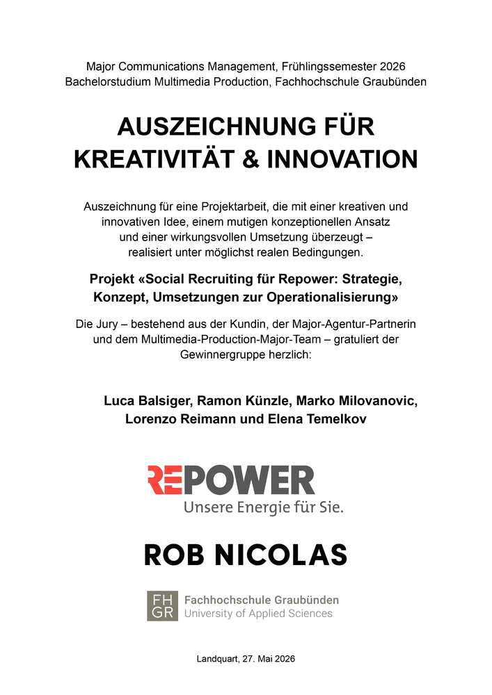

Analyse
Untersuchung der Ausgangslage, der relevanten Zielgruppen und der Herausforderungen beim Recruiting von technischen Fachkräften.
Employer Branding · Social Recruiting
Entwicklung eines Social-Recruiting-Konzepts für Repower im Rahmen einer Gruppenarbeit im Major Communications Management an der FH Graubünden.
LinkedIn-Beitrag ansehenDas Projekt
Im Frühlingssemester 2026 entwickelten wir im Major Communications Management ein Social-Recruiting-Konzept für Repower.
Das Projekt entstand als Gruppenarbeit gemeinsam mit meinen Kommilitoninnen und Kommilitonen Luca Balsiger, Ramon Künzle, Lorenzo Reimann und Elena Temelkov.
Im Zentrum stand die Frage, wie Repower qualifizierte Fachkräfte für die Bereiche Netzbau und Instandhaltung erreichen und sich gleichzeitig als glaubwürdige, regionale und attraktive Arbeitgeberin positionieren kann.
Dafür entwickelten wir eine Kampagne, welche die Bedeutung dieser Berufe sichtbar macht und den Menschen hinter einer funktionierenden Energieversorgung Anerkennung gibt.
Die Leitidee
«Ohne dich funktioniert nichts.»
Strom und eine funktionierende Infrastruktur werden im Alltag häufig als selbstverständlich wahrgenommen. Die Kampagne zeigt, dass hinter dieser Selbstverständlichkeit Menschen stehen, die Verantwortung übernehmen und einen direkten Beitrag zur Versorgungssicherheit leisten.
Unser Vorgehen
Untersuchung der Ausgangslage, der relevanten Zielgruppen und der Herausforderungen beim Recruiting von technischen Fachkräften.
Entwicklung einer Arbeitgeberpositionierung auf Basis von Sinnhaftigkeit, regionaler Verbundenheit, Teamzusammenhalt und der Arbeit in der Bündner Natur.
Entwicklung der Leitidee «Ohne dich funktioniert nichts» und Übertragung der Botschaft auf verschiedene Situationen aus dem Alltag.
Konzeption von Hero-, Hub- und Help-Content für Instagram, TikTok und LinkedIn sowie Entwicklung einer passenden Candidate Journey.
Ausarbeitung konkreter Content-Prototypen und Überprüfung der Kampagnenwirkung mithilfe einer Umfrage.
Mein Beitrag
Mitarbeit bei der Analyse der Ausgangslage, der Zielgruppe und der Arbeitgeberpositionierung von Repower.
Beteiligung an der Entwicklung der Leitidee, der Kampagnenbotschaft und verschiedener Content-Ansätze.
Gemeinsame Ausarbeitung der Content- und Kanalstrategie sowie der Hero-, Hub- und Help-Formate.
Mitarbeit bei der Aufbereitung und Präsentation des finalen Konzepts vor der Jury und der Projektpartnerin.
Auszeichnung
Unser Projekt wurde von einer Jury aus der Kundin, der Major-Agentur-Partnerin und dem Multimedia-Production-Major-Team ausgezeichnet.
Gewürdigt wurden die kreative und innovative Idee, der mutige konzeptionelle Ansatz und die wirkungsvolle Umsetzung unter möglichst realen Bedingungen.

Offizieller Beitrag von Repower